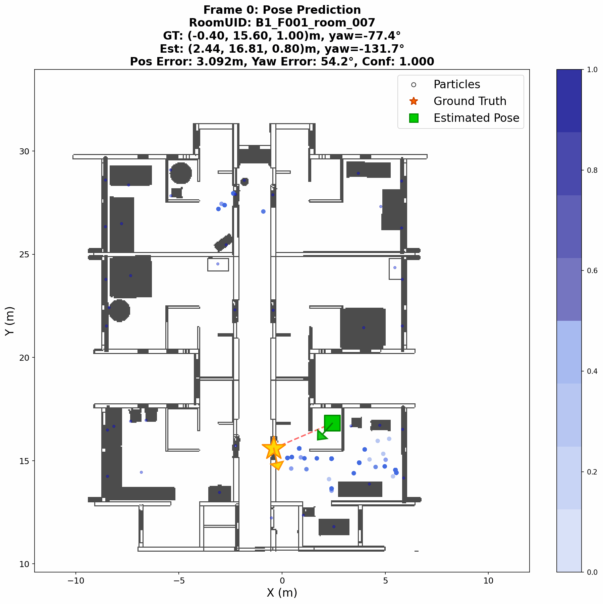
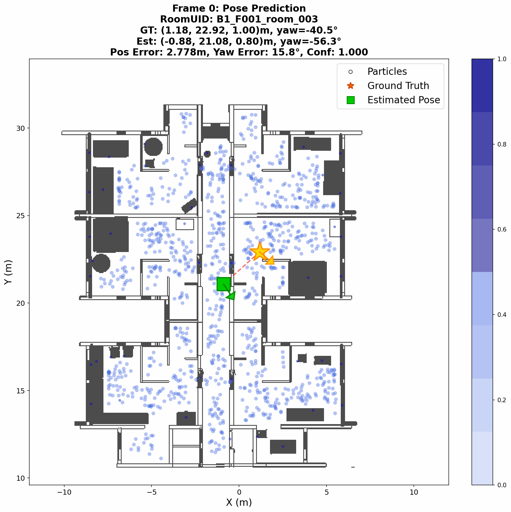
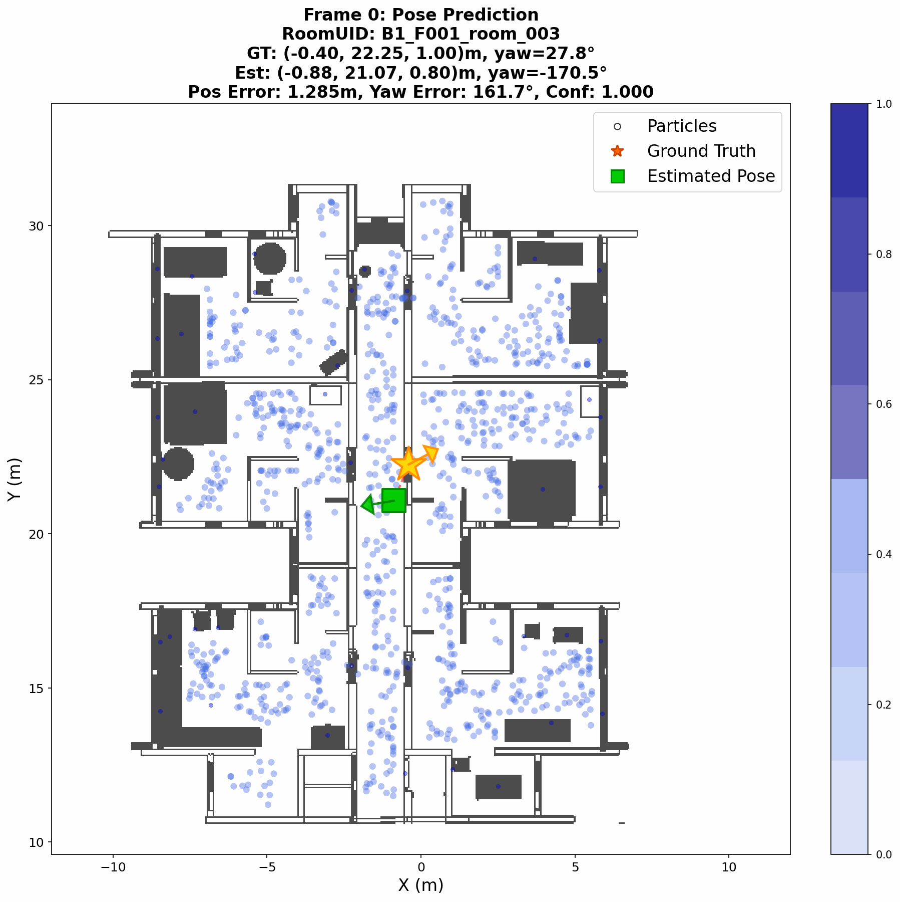
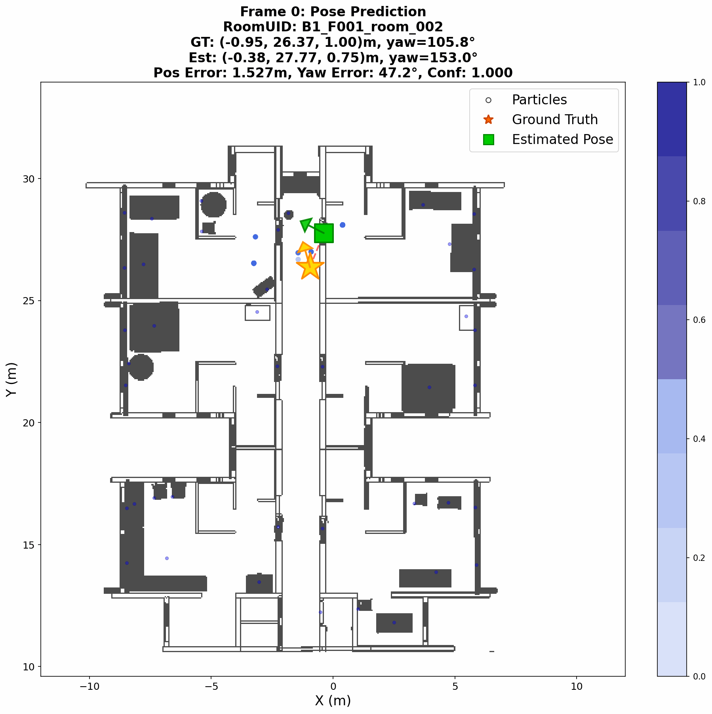
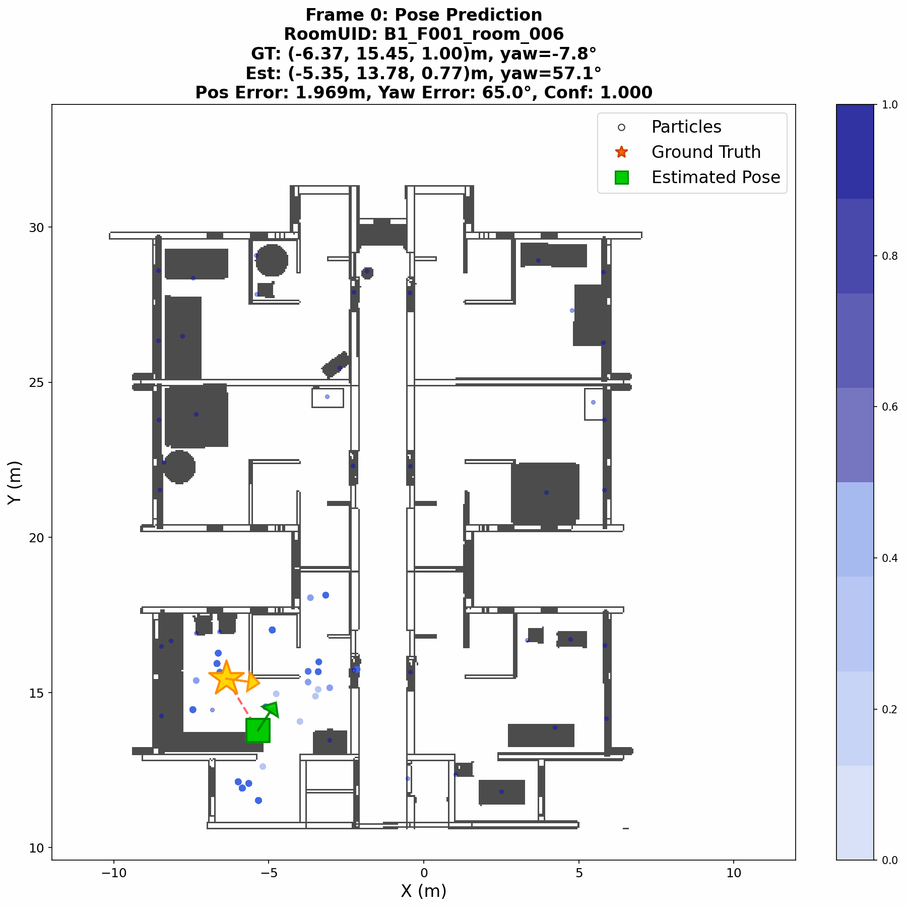
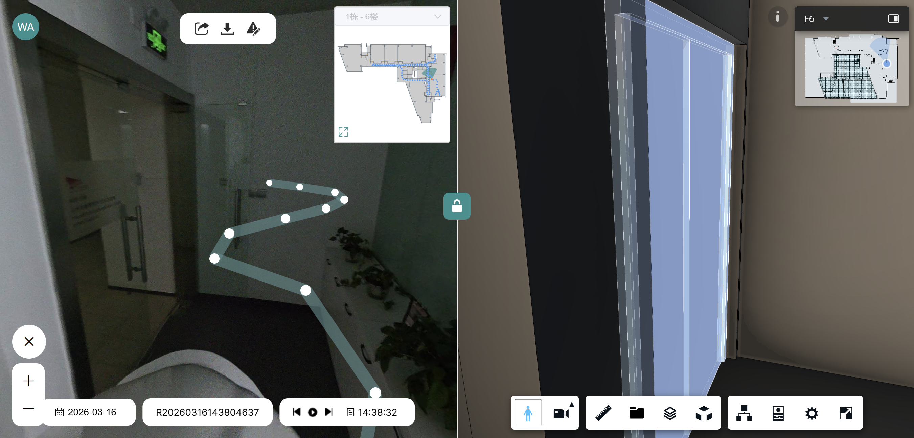
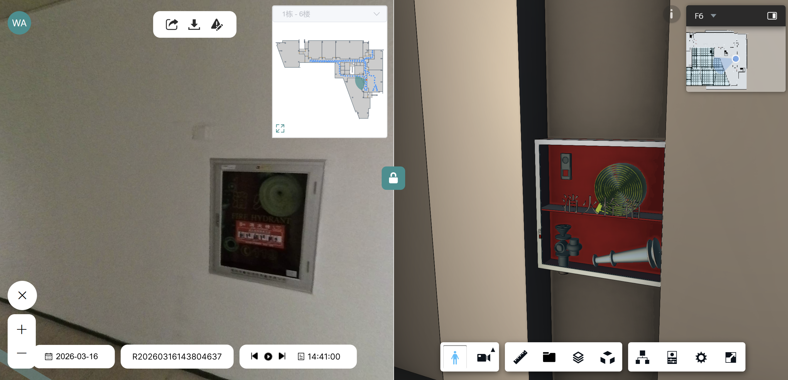

Trial 1

Trial 2

Trial 3

Trial 4
Trial 5

Trial 6
Failure Video 1
Failure Video 2
We conduct initial real-world experiments in a completed building using a panoramic camera-based sensor suite mounted on a person's head. As the person moves through the environment, the system captures a real-time RGB images in the scene (left). Meanwhile, the algorithm deployed on a portable computer performs open-set detection and scene graph construction, followed by semantic localization with the BIM hierarchical graph. The estimated global pose at each timestep is projected on the BIM map in a top-down view, accompanied by a rendered image at that pose (right). This online platform is developed by the SYNLOOP startup company.

Experiment 1

Experiment 2